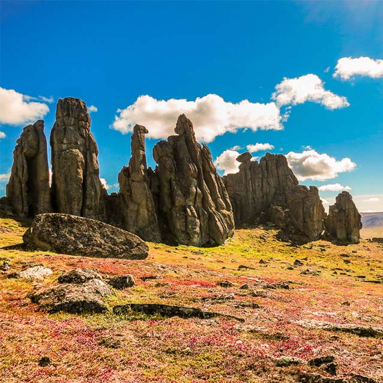
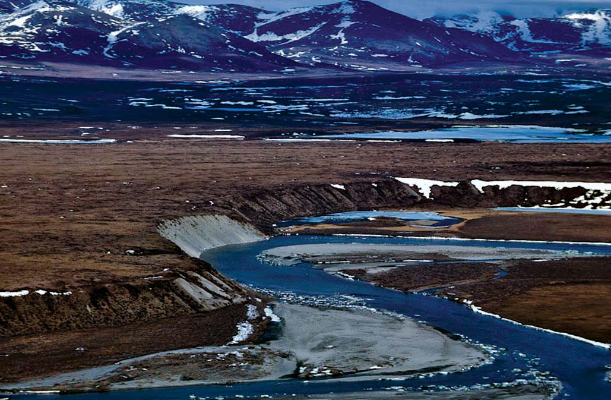
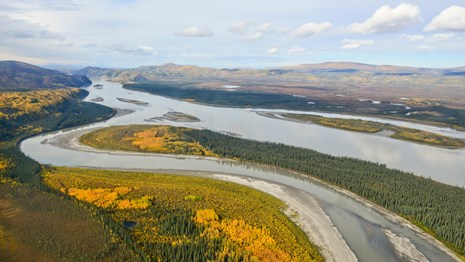

National Preserves. From left to right, Bering Land Bridge National Preserve,
Noatal National Preserves, Yukon-Charley National Preserves.
The National Preserves
Bering Land Bridge National Preserve:
Bering Land Bridge National Preserve is a remnant of what once was the
Bering Land Bridge. Most archeologists believe that it was across the Bering
Land Bridge that humans first traveled from Asia to populate the Americas.
During the Last Ice Age, about 12,000 years ago, the water level of the oceans
were lower, exposing land that today is under the Bering and Chukchi Seas.
This exposed area provided a migration route for people, animals,
and plant life.
Noatak National Preserve:
Noatak National Preserve is located in the northwestern part of Alaska
and was established to protect the Noatak River Basin. This basin is thought
to be the last remaining complete river system in the United States that has
not been altered by human activities. The basin was proclaimed a United States
National Monument in 1978 and a National Preserve in 1980.
Yukon-Charley Rivers National Preserve:
Yukon-Charley Rivers National Preserve was proclaimed as a United States
National Monument on December 1, 1978, and was redesignated a National Preserve
on December 2, 1980. The Charley River has been named a National Wild River.